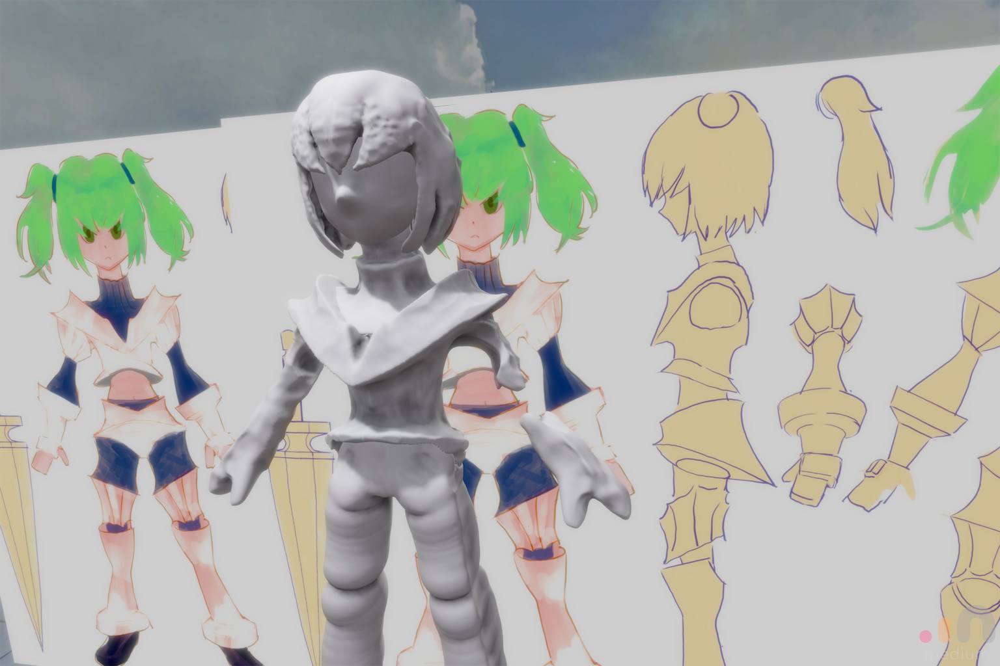
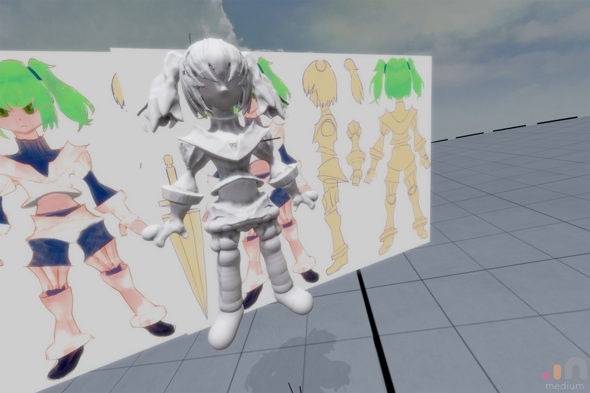
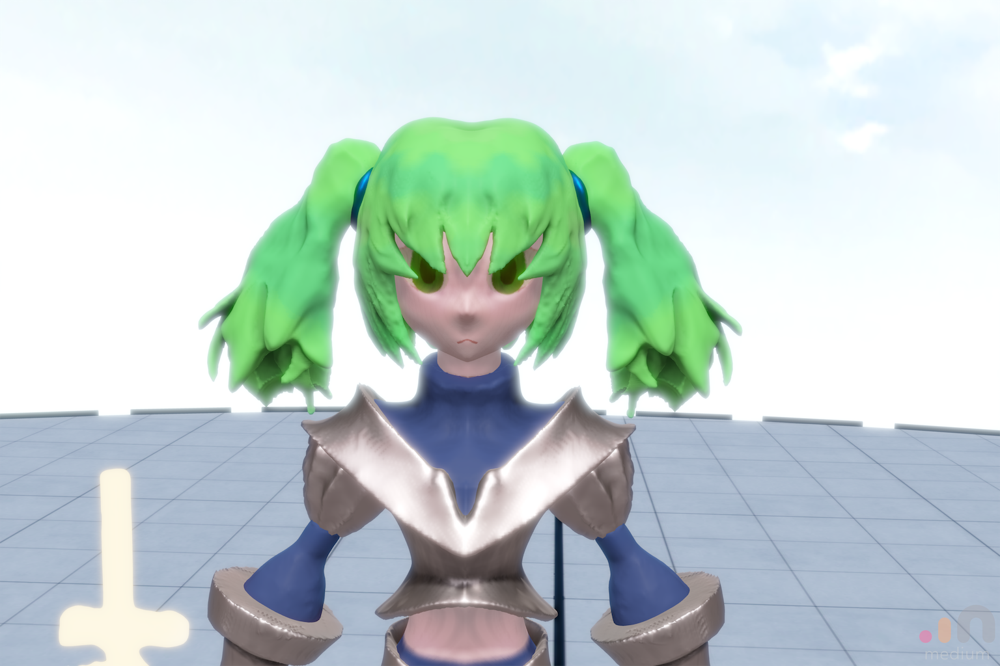

Mediumで造形する時の手順メモ
概要
かなりノウハウが形になってきたので覚え書き。
1.絵を描く
あったほうが結果的に早い。
2.絵を見ながら頭身をざっくり作る。

3.外形を作って、切断面になりそうなところに来たら切る
カットツール使って切る。
その際、左右対称であってほしいけど左右に分割されている = 左右が切断されているパーツとかは、
そのままカットすると左、右の2つのレイヤーに分かれてしまうので、
・カットする前にClayで左右をつなぐパーツを作る
・切断したい面をカットする
・つないでいたパーツを削り切る
とかすると、大変スマートに切断後も1レイヤーで居てくれる。

4.細かい部分は、色を塗りながらMoveツールで変形すると捗る
テクスチャのもとになるカラーなんだけど、Mediumだと「塗りながらMoveツールでいじる」とかができるので、
・目のサイズを雑に描いて決める
・そのサイズに合わせて頭パーツの凹凸を調整する
ということがシームレスにできる。
あと完成時のイメージとは関係ないんだけどメタリックパーツは燃える。

5.Exportする
まだ試行錯誤中なんだけど、思っていたよりもZBrush/ZRemesherが強力なので、その辺に頼る形で
高ポリゴンな状態でexportしても問題ないかもしれない。
テクスチャをいい感じの密度で出力するのはまだ実験中。